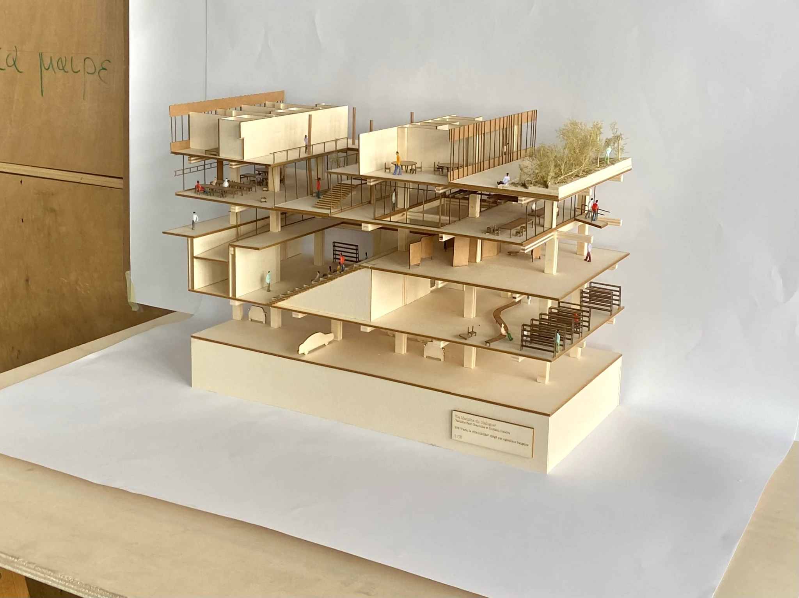

ARTIFICE / WORKSARCHITECTURE, IMAGES, SOUND
Works
Research takes shape. Through architecture, drawings, moving images, sound and other ways of encountering a place.

AN OPEN PRACTICE
Architectural research is material for making. We develop forms of representation and intervention through film, photography, sound, installations, spatial documentation and architectural design.
New works will appear here as they are produced. Interested in a research collaboration or commission? Get in touch ↗